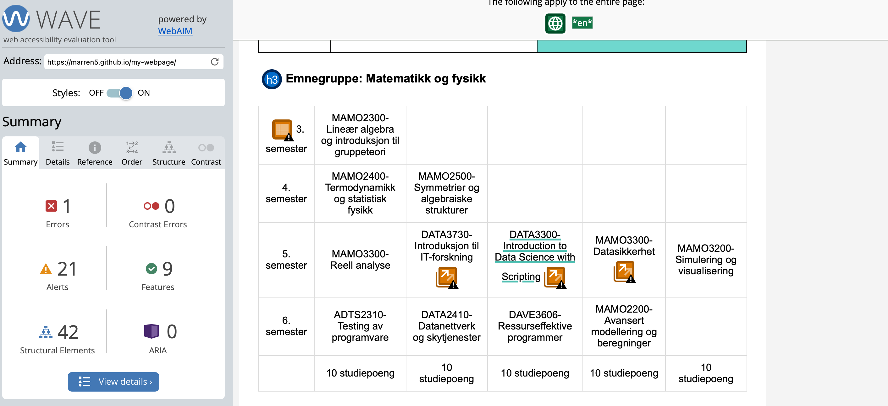
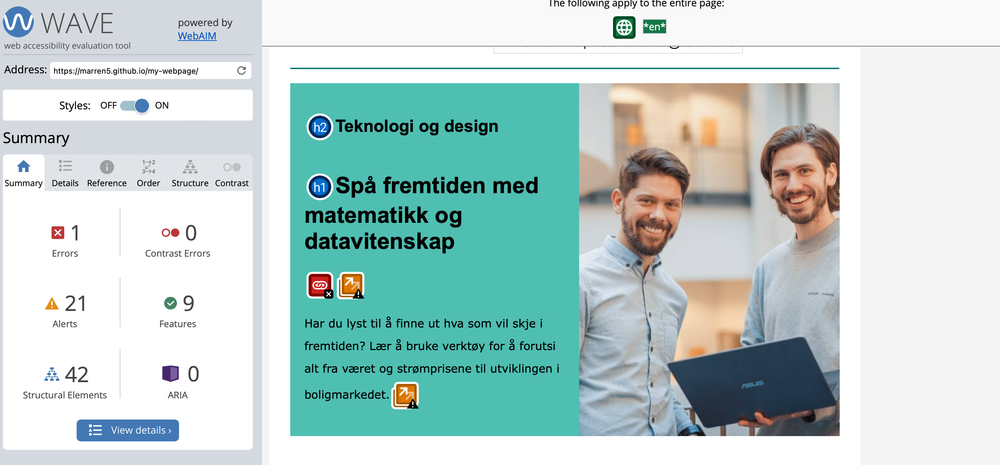
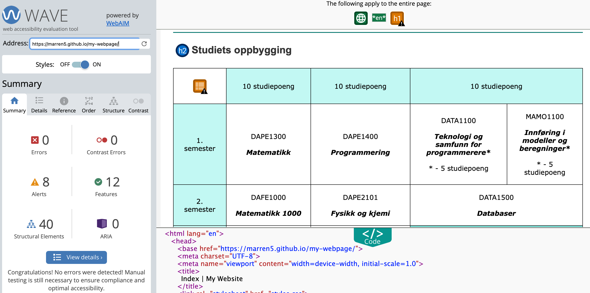

Universal design choices in project
When developing this project, the group focused on incorporating principles of universal
design that were learned from the lectures and supplementary sources, to ensure that the website is accessible, user-friendly, and functional.
Below we presented a short overview of the key coding choices we made to align with these goals.
Semantic HTML
First of all, we prioritized semantic HTML elements, such as "header", "main", "section", and "footer" in order to structure the
content logically. This approach improves the webpage's readability and makes it easier for users to navigate (and for developers to find bugs).
Tables were also styled and designed with accessibility in mind. For example, we added
proper "thead", "tbody", and "th" tags where appropriate, ensuring that the table content is clear for
users. We find each table cell descriptive enough. However, while testing our website on Wave, we got alerts releted to table´s accessibility (see Figures below). Nevertheless, we find our tables representative and accessible.
Accessible text and links
We used expected heading levels ("h1", "h2", etc.) to maintain a logical hierarchy.
Bold text was used to highlight essential information while maintaining a clean design.
For links, descriptive anchor text ensures users know what to expect when clicking. Additionally,
links were styled to be visually distinct, this way improving accessibility for users.
Flexibility
Initially we implemented grid layout for Activity page to create a responsive design that adapts to various screen sizes, but later changed that into flexbox layouts.
Both approaches ensure that content is accessible on desktops, laptops, phones, etc. We, however, found flex more convenient for our creative prospectives (but maybe, it was mostly related to our status as a "new beginner in coding").
Particularily, the layout in the main section divides the content into a 60/40 split, leaving room for future
additions without compromising the existing design.
Images and text scale proportionally, maintaining usability across devices.
Screenshot from the testing site (Wave)

Screenshot from the testing site # 1. Highlihts alerts related to tables.

Screenshot from the testing site (Wave) # 2. Comment: while taking this screenshot, we were not aware of the need to capture the code as well. But the problem was in empty link in container-box.

Screenshot from the testing site (Wave) # 3. Final check.